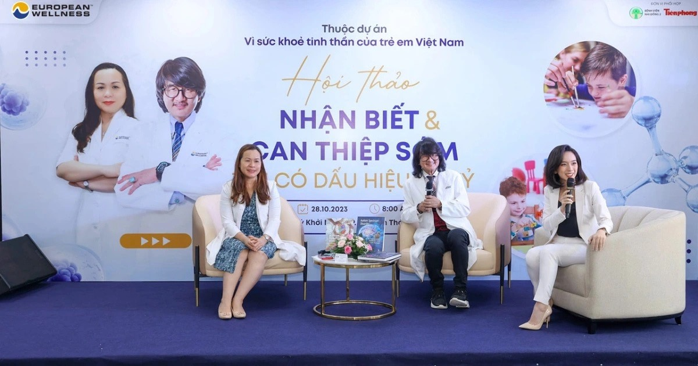
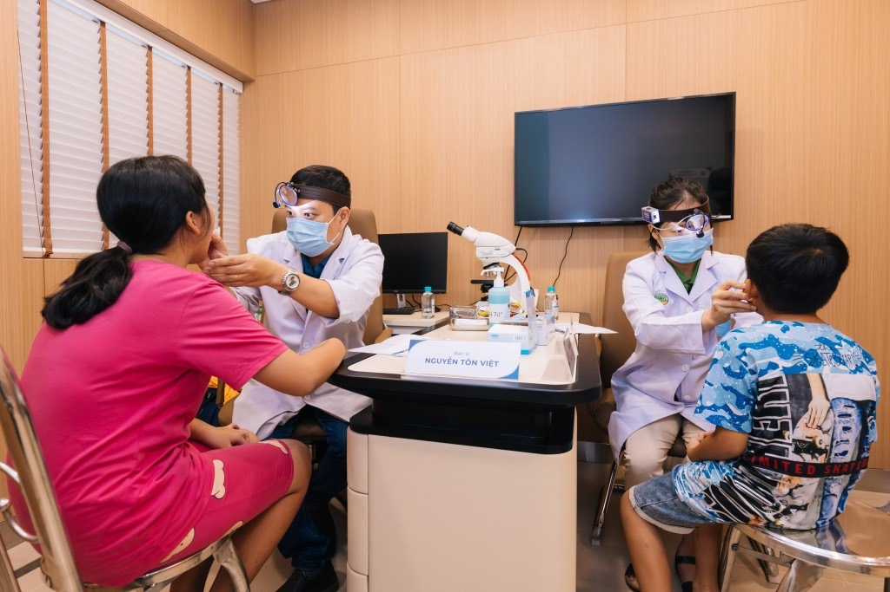

01
Build your name
Personal brand strategy for doctors who want to become better known as specialists.
11 / Selected case study
Strategic & Project Director. A healthcare project with no real precedent.

Challenge
The team was struggling to engage and reach the intended patient audience. The proposition was still unfamiliar locally — especially in a sensitive conversation involving children and families.
“Vì Sức Khoẻ Tinh Thần Trẻ Em Việt Nam”
A locally relevant awareness platform built around education, expert voices and trust — rather than leading with the treatment.
500+ families reached nationwide · 3 earned media features · Awareness → engagement → revenue. Commercial conversion exceeded expectations.

Personal brand strategy for doctors who want to become better known as specialists.
Brand and patient experience for founders opening a first clinic.
When patients know the doctor, but not the clinic — or the clinic looks like everyone else’s.